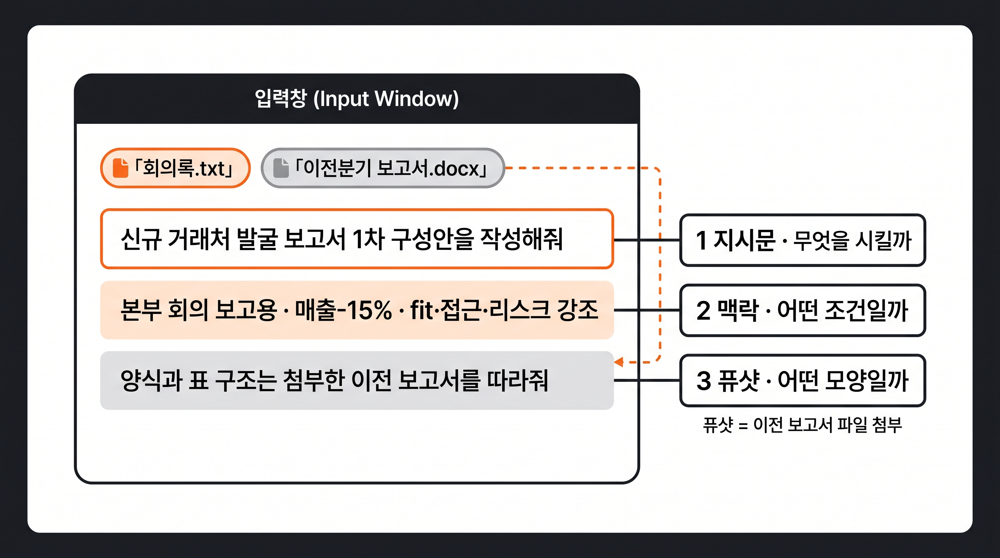
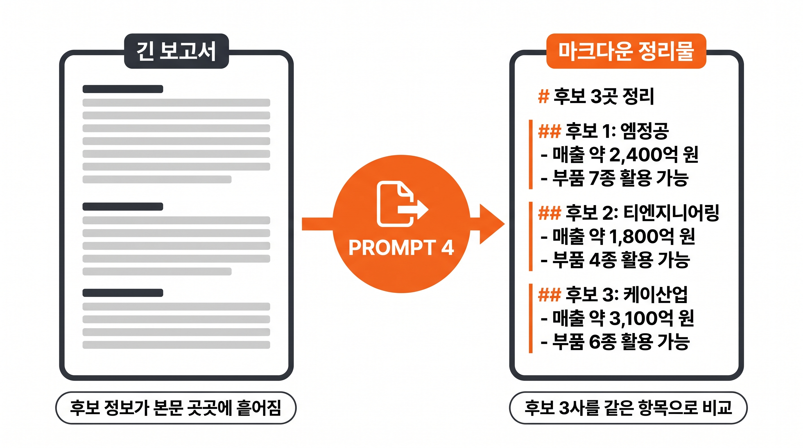
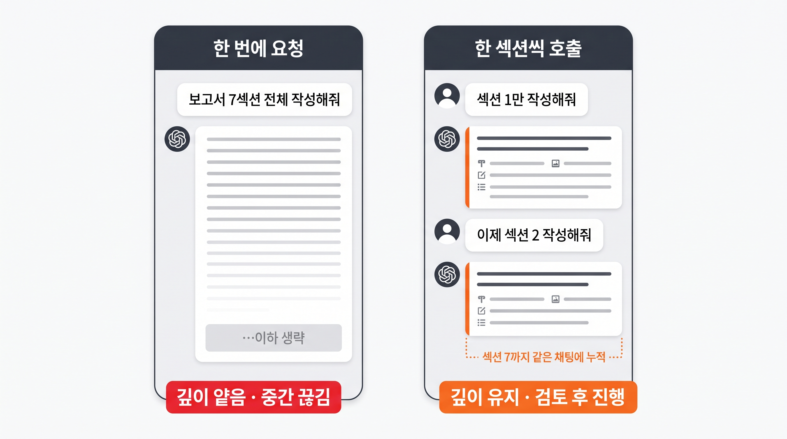
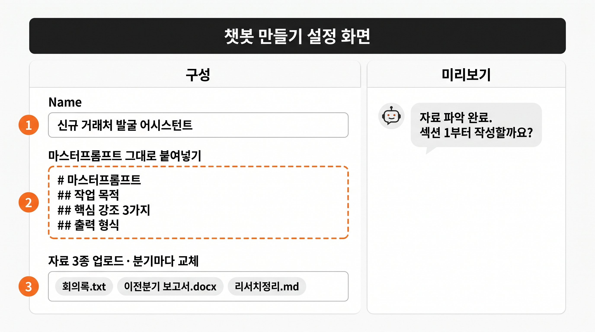

프롬프트 엔지니어링
영업 김대리가 받은 한 가지 미션을 함께 끝까지 완성합니다 — 회의록 · 내부 양식 · 외부 리서치 → 보고서 → GPTs 자산화.
오늘의 미션 : 김대리의 「신규 거래처 발굴 전략 보고서」회의록 · 내부 양식 · 외부 리서치를 합쳐 7섹션 보고서를 끝까지 완성합니다
0-1. 김대리의 미션
당신은 자사 영업본부의 경력입사 3개월차 김대리입니다. 이번 주 영업 주간회의에서 박본부장이 다음과 같이 지시했습니다.
0-2. 강의 끝나면 이렇게 나옵니다 — 산출물 미리보기
강의를 끝까지 따라오면, 다음 7섹션이 채워진 보고서를 손에 들고 자리로 돌아갑니다. 지금 양식이 머리에 들어오지 않아도 괜찮습니다 — 남은 8개 PART(01~08)를 거치면서 각 섹션이 어떻게 채워지는지 직접 만들어봅니다.
SECTION 1~3배경 · 후보 개요 · 선정 기준
왜 발굴이 필요한지, 후보 3사는 누구인지, 어떤 기준으로 골랐는지. 회의록 + 외부 리서치로 채웁니다.
SECTION 4~5상세 분석 · 접근 전략
후보별 회사 개요·fit 평가·예상 거래 규모. 첫 컨택부터 첫 미팅까지의 채널과 메시지. 퓨샷 + 리서치로 채웁니다.
SECTION 6~7리스크 · 실행 일정
각 후보별 리스크와 대응 방안, 다음 분기 실행 주차별 일정. 퓨샷 + 본인 판단으로 마무리합니다.
0-3. 역할 · 자원 · 보안 룰
강의 내내 김대리 입장에서 작업합니다. 강사가 자료 3종을 미리 준비해 두었습니다.
YOUR ROLE김대리
경력입사 3개월차 영업본부 사원. 박본부장 지시로 신규 거래처 발굴 보고서를 다음 본부 회의(다음 주 화요일)까지 작성해야 합니다.
GOAL의사결정 보조
본부 회의에서 박본부장과 본부 임원들이 "어느 후보부터 컨택할지" 즉시 결정할 수 있게 합니다. 추천 우선순위와 리스크가 한눈에 보여야 합니다.
CONSTRAINT외부 AI 입력 금지
회사 매출 수치·기존 거래처명·내부 KPI는 외부 AI에 입력하지 않습니다. 회의록은 비식별 학습용 가상 자료이며, 후보 거래처는 공개 자료 기반으로 발굴합니다. 실제 업무 적용 시에는 회사 보안 정책과 계정 유형(개인용/기업용)을 먼저 확인합니다.
평범한 입력은 평범한 출력을 만든다김대리가 평소처럼 한 줄로 시켜본다 — 어디서 막히는지 직접 부딪힙니다
1-1. 평범한 입력의 한계 — 김대리의 첫 시도
김대리는 박본부장 지시를 받고 자리에 돌아왔습니다. 평소처럼 ChatGPT 창을 열고 한 줄로 물어봅니다. 좋은 프롬프트를 먼저 보여드리지 않습니다 — 왜 그게 필요한지 체감하려면, 평범한 시도가 어디서 막히는지 직접 봐야 합니다. 여러분도 지금 ChatGPT를 열고 이 한 줄을 그대로 입력해 보세요 — 결과 창을 닫지 말고 띄워두면, PART 02에서 3요소를 적용했을 때 내 화면에서 직접 Before / After를 비교할 수 있습니다.
빈자리 1WHO · 누가 누구에게 보고?
영업본부장에게 보고하는 김대리? 컨설팅사가 외부 의뢰사에 제출? 톤·전문성 수준이 완전히 달라집니다. 이 한 줄로 AI는 평균치를 추측합니다.
빈자리 2WHAT · 어떤 산업, 어떤 회사?
자사 영업본부가 어떤 제품군을 다루는지, 후보 거래처가 어느 산업이어야 하는지 없습니다. 가장 핵심 정보가 비어있습니다.
빈자리 3WHY · 왜 만드는 보고서?
회의록에 박본부장이 강조한 "fit 평가 · 접근 전략 · 리스크" 3가지 핵심이 있는데 한 줄에는 전혀 반영되지 않았습니다.
빈자리 4FORM · 양식 없음
이전 분기에 작성된 7섹션 사내 양식이 있는데도, 한 줄 프롬프트는 이를 모릅니다. AI 결과는 회사 양식과 다른 모양이 나옵니다.
빈자리 5DATA · 후보 거래처 정보 없음
후보 거래처가 누구인지, 매출·산업·강점이 무엇인지 AI는 모릅니다. 외부 리서치 없이는 "~를 잘 분석해야 합니다"같은 일반론만 나옵니다.
AI 성능 문제가 아니라 우리가 평범하게 시켰기 때문입니다
프롬프트의 기본 : 지시문 + 맥락 + 퓨샷이 기본기로 김대리의 보고서 1차 구성안까지 만듭니다
2-1. 모든 좋은 프롬프트의 공식
실무에서 쓰이는 좋은 프롬프트는 결국 세 요소의 조합으로 환원됩니다. 이 공식만 외워도 70%는 끝납니다.
동사로 시작 + WHO/WHAT/WHY/FORM
회의록·KPI·제약
양식·문체·표 구조 학습
▸ 박본부장 핵심 3가지 반영

- WHO · WHAT · WHY · FORM → 지시문 한 문단에 4가지가 압축됩니다 (역할·산업·목적·양식 명시)
- 회의록 · KPI · 제약 조건 → 맥락에 첨부 (회의록 텍스트 그대로 또는 정리해서)
- DATA(후보 거래처) → 퓨샷이 양식·접근법을 가르치면, 본문 데이터는 다음 PART 심층 리서치에서 채웁니다
2-2. 같은 자료, 같은 AI — 입력이 다르면 결과가 다르다
평범한 한 줄 입력과 3요소 묶음 입력은 같은 AI에서도 완전히 다른 결과를 만듭니다. PART 01의 한 줄 vs PART 02의 3요소 — 김대리의 같은 보고서 작업에 대해 두 결과를 나란히 비교해봅니다.
- 일반론 ("시장 분석 → 잠재 고객 발굴")
- 후보 거래처 0곳
- 자사 영업본부 맥락 없음
- 회사 양식과 무관한 구조
- 박본부장에게 가져가면 반려
- 회사 7섹션 양식 그대로
- 박본부장 핵심 3가지(fit·접근·리스크) 반영
- 후보 거래처 자리 마련 (다음 PART에서 채움)
- 사내 양식 보고서 문체·표 그대로
- 본부 회의 발표 가능 수준 구조
2-3. 김대리가 3요소를 묶어 보고서 1차 구성안 만들기
실무에서 퓨샷은 보통 회사 내 이전에 작성된 유사 보고서를 첨부하는 방식입니다. 새로 만들 보고서와 주제는 다르더라도 양식·톤·표 구조가 같은 이전 사례를 AI에 보여주면, AI가 그 양식을 그대로 따라 만듭니다. 아래 파일을 ChatGPT 채팅창에 첨부한 뒤 PROMPT 2를 입력하세요.
회의 전체가 담긴 STT 자동 변환 텍스트. 따로 정리하지 않고 그대로 첨부합니다 — 보고서에 필요한 맥락이 이 안에 다 있습니다.
작년 4분기에 작성된 동일 양식 보고서. 7섹션 구조·문체·표의 퓨샷으로, AI가 이 모양을 그대로 따라 작성합니다.
신규 거래처 발굴
전략 보고서 — 1차 구성안
본 보고서는 매출 -15% 부진과 상위 거래처 72% 의존도 문제를 해결하기 위한 신규 후보 3곳의 발굴 결과와 접근 전략을 정리한다. 박본부장 핵심 3가지(fit·접근·리스크) 관점으로 정리하여, 본부 회의에서 즉시 우선순위 결정이 가능하도록 한다.
- 2026년 1분기 본부 매출 목표 대비 -15%, 전년 동기 대비 -7%
- 상위 5사 매출 비중 72% → 단일 거래처 변동에 분기 수익 노출
- 본부 임원회의 결정: 다음 분기 신규 거래처 발굴 본부 KPI 설정
- 후보 1 · 2 · 3 — 다음 단계 심층 리서치에서 채움 (회사명·산업·매출 규모·우선순위)
- 표 양식: 사내 양식 보고서와 동일 6행 비교표
- 같은 방식으로 섹션별 한 문단씩 구성 — 실제 본문은 PART 06에서 한 섹션씩 채웁니다
강의 종료 시 김대리가 완성하게 될 7섹션 보고서 완성본 워드 파일. PART 03부터 PART 06까지 차근차근 채워가는 흐름의 도착점입니다. 본인 결과물과 비교하면서 톤·구조·표 디자인의 기준으로 활용합니다.
이 공식이 오늘 하루의 뼈대입니다
심층 리서치로 후보 거래처 3곳을 발굴한다1차 구성안에서 비워둔 자리를 본문 데이터로 채웁니다
PART 02에서 만든 1차 구성안에는 후보 거래처 자리가 비어 있었습니다. 하나하나 검색해 채우려면 시간이 꽤 드는 일입니다. 이번 PART에서는 이 조사를 ChatGPT의 심층 리서치(Deep Research)에 맡깁니다. 다만 결과를 확인 없이 보고서에 넣으면 박본부장 회의에서 망신당할 수 있습니다. 그래서 PART 03·04를 꿰는 원칙은 하나입니다 — 맡기되, 쥔다. 이번 PART에서는 조사는 맡기고, 검수는 내가 합니다.
3-1. 조사를 '맡기는' 기능 — 검색과 무엇이 다른가
검색은 질문 하나에 요약 하나를 바로 돌려줍니다. 심층 리서치는 다릅니다 — 조사 담당자에게 보고서를 의뢰하는 것에 가깝습니다. 의뢰를 받으면 아래 순서로 일합니다.
맡길 만한지는 '찾기 어렵게 만든 문제'로 잰 시험에서 볼 수 있습니다.
찾기 어렵게 만든 1,266문항에서 사람은 문제당 2시간 안에 29%를 풀었습니다. 최신 AI는 83~92%를 찾아냈습니다.
무엇을 언제 쓸지는 OpenAI 도움말의 기준이 간단합니다 — 빠른 사실 확인은 검색, 깊이 있고 철저한 조사는 심층 리서치. 영업이라면 후보 거래처 발굴 · 경쟁사 비교 · 업계 동향 조사가 심층 리서치 몫입니다.
3-2. 의뢰서를 쓰고, 계획을 확인하고, 맡긴다
좋은 의뢰서는 목적 · 범위 · 결과 형식 · 출처 조건 네 가지를 담습니다. PROMPT 3은 이미 그렇게 짜여 있어 칸마다 이름을 붙여 두었습니다. 복사해 보내기 전에, 아래 1단계대로 새 채팅에서 심층 리서치부터 켭니다.

- 켜기 — 새 채팅을 열고, 입력창의 도구 메뉴(+)에서 심층 리서치를 고릅니다(입력창에
/Deepresearch를 입력해도 됩니다). PROMPT 3을 붙여 넣고 보냅니다. - 계획 확인 — 되묻는 질문이 오면 "의뢰서에 적은 대로 진행해 주세요"라고 답합니다. 제안된 리서치 계획안에 의뢰서의 네 가지(후보 3곳 · 대상 산업과 매출 기준 · 비교 표 · 공개 자료 출처)가 들어 있는지 보고, 빠진 것만 고친 뒤 시작합니다.
- 진행 화면 — 진행 상황이 뜨면 지켜보지 않고 넘어갑니다. 그동안 3-3과 PART 04의 4-1~4-3을 먼저 보고, 보고서가 완성되면 3-4로 돌아옵니다. 심층 리서치를 켤 수 없거나 실행이 멈췄어도 그대로 3-3으로 넘어갑니다 — 4-4에 백업 파일이 있습니다.
3-3. 기다리는 동안 — 결과를 믿기 전에
아닙니다. 심층 리서치도 틀립니다. 그래서 검수는 사람 몫입니다.
같은 찾기 시험에서 최신 AI도 10문제 중 1~2문제는 정답에 이르지 못했습니다.
OpenAI가 공개한 자체 시험에서도 최신 모델의 사실 오류는 크게 줄었지만 0이 되지는 않았습니다. OpenAI 도움말도 심층 리서치 결과에 출처를 다는 이유를 '정보를 검증할 수 있도록'이라고 설명합니다.
결과에 섞일 수 있는 대표적인 패턴은 세 가지입니다.
3-4. 결과 도착 — 계획대로 왔는지, 핵심 수치 2개 검수
보고서가 완성되면 화면에서 세 곳을 봅니다. 4-3의 읽는다대로 목차부터 훑어 3-2에서 확인한 리서치 계획안대로 왔는지 보고, 사용한 출처에서 핵심 수치 2개(예: 1 · 2순위 후보의 매출)를 골라 3-3의 방법대로 원문과 대조합니다. 어떻게 찾았는지 궁금하면 진행 기록을 엽니다. 아래는 보고서 본문 일부를 보여 주는 예시입니다.
신규 거래처 후보 3곳
발굴 보고서
정밀 기계 · 자동차 부품 2개 산업군에서 매출 1,500억 이상 중견 OEM 3곳을 발굴. 1순위 엠정공(정밀 기계, 화성), 2순위 티엔지니어링(정밀 기계 · 중장비 부품, 천안), 3순위 케이산업(자동차 부품, 창원).
- 2025년 매출 약 2,400억 (+11% YoY) [DART 공시, 2026-03]
- 정밀 절삭 부품·산업용 금형 / 국내 중대형 OEM 다수
- fit 평가: 자사 부품 SKU 7종 활용 가능 (호환성 90% 추정)
- 의사결정 라인: 구매팀장 → 구매본부장 → 대표이사 (3단계)
- 2025년 매출 약 1,800억 (+9% YoY) [NICE신용평가, 2026-04]
- 중장비 핵심 부품 OEM / 국내 중장비 1·2위사 거래
- fit 평가: 정밀 가공·내마모성 부품 SKU 4종 활용 가능
- 의사결정 라인: 생산본부장 → 대표이사 (2단계, 빠름)
- 2025년 매출 약 3,100억 (+6% YoY) [DART 공시, 2026-03]
- 자동차 정밀 가공 부품 / 국내·해외 자동차사 OEM 다수
- fit 평가: 자동차 부품 SKU 6종 활용 가능 (기존 거래선 경쟁 필요)
- 의사결정 라인: R&D팀장 → R&D본부장 → 구매본부장 → 대표이사 (4단계)
- 1단계 (가장 높음): 공시 자료 (DART), 정부·공공기관 보고서, 학회 발표
- 2단계 (보통): 주요 언론사 기사, 신용평가사 보고서, 산업협회 정기 발간물
- 3단계 (낮음): 블로그·커뮤니티·개인 분석 글 → 보고서에 그대로 인용 X
검수를 마친 보고서는 Markdown · Word · PDF로 내려받을 수 있습니다.
검수는 내가
도착할 보고서를 읽고, 마크다운으로 정리합니다마크다운은 외우는 문법이 아니라 읽고 · 시키고 · 고치는 문법입니다
심층 리서치 보고서는 길고, 다음 PART들에서 AI에게 다시 넘겨야 합니다. 이번 PART에서는 작성은 맡기고, 구조는 내가 정합니다. 4-1~4-3은 결과가 오기 전에 보는 읽을 준비, 4-4~4-5는 결과가 도착한 뒤 하는 써먹기입니다.
4-1. 이미 매일 보는 기호 — 마크다운이란
ChatGPT 답변의 제목 · 굵은 글씨 · 목록 · 표를 떠올려 보세요. 그 답을 복사해 메신저나 메모장에 붙이면 **, ## 같은 기호가 따라올 때가 있습니다. 그 기호가 마크다운입니다. 곧 도착할 심층 리서치 보고서도 같은 기호로 짜여 있고, 아예 마크다운 파일(.md, 줄여서 md 파일)로 내려받을 수도 있습니다.
- 2025 매출: 약 2,400억 원
- 호환성 90% 추정
마크다운은 #, -, ** 같은 기호 몇 개로 '여기는 제목, 여기는 목록, 여기는 강조'를 표시하는 글쓰기 약속입니다. 2004년에 공개된, 특정 회사 것이 아닌 공개 형식입니다. 한글 · 워드에서 마우스로 고르던 '제목 1 · 제목 2 · 글머리표 · 굵게'를 키보드 기호로 적은 것이라고 생각하면 됩니다.
| 기호 | 한글 · 워드에서는 | 예 |
|---|---|---|
# | 제목 1 (문서 제목) | # 후보 3곳 비교 |
## | 제목 2 (섹션) | ## 후보 2: 티엔지니어링 |
- | 글머리표 | - 본사: 충남 천안 |
1. | 번호 매기기 | 1. 엠정공 |
**굵게** | 굵게 | **의사결정 2단계** |
| 표 | | 표 | | 항목 | 엠정공 | 티엔지니어링 | |
#을 하나 더 붙이면(###) 한 단계 아래 제목이 됩니다.
4-2. 왜 구조를 표시하나 — 세 가지 이유
OpenAI는 최신 모델이 목록 · 표 · 마크다운으로 답하는 경향이 있다고 안내합니다. 읽을 줄 알면 받은 답을 다음 작업의 재료로 바로 씁니다.
같은 후보 3사 정보를 형식만 바꿔 쟀습니다. Cloudflare가 자사 블로그 글 한 편을 HTML에서 마크다운으로 바꿨을 때는 태그·스크립트가 빠지면서 토큰이 80% 줄었습니다.
줄글은 한 후보의 정보가 여러 문장에 섞여 있지만, 마크다운은 후보별 · 항목별로 칸이 나뉩니다. 그래서 섹션 하나만 가리켜 고치게 할 수 있습니다. 4-4에서 직접 해 봅니다.
4-3. 외우지 말고 — 읽고, 시키고, 고친다
쓰는 건 AI가 하고, 사람은 세 가지만 합니다.
1읽는다
보고서가 오면 제목 줄부터 훑어 뼈대를 봅니다. 화면에서는 목차와 소제목, md 파일 원문에서는 # · ## 줄입니다.
2시킨다
"후보별로 ## 섹션, 비교는 표로"처럼 구조를 정해 요청합니다.
3고친다
## 한 줄을 더하거나 순서를 바꾸고, "## 후보 2만 다시"처럼 부분만 다시 시킵니다.
**, ##가 거슬린다면 "기호 없이 문단으로 써 줘"라고 요청합니다. OpenAI는 줄글이 필요하면 그렇게 지정하라고 안내하고, Anthropic도 프롬프트의 서식이 답의 서식에 영향을 준다고 설명합니다.
출처: OpenAI 개발자 문서 「Using GPT-6」 · Anthropic 「Prompting best practices」, 2026
4-4. 실습 — 검수한 보고서를 마크다운으로 정리
심층 리서치 보고서도 마크다운 기호로 짜여 있고 비교 표도 들어 있습니다. 하지만 본문이 길고, 표에 다 담기지 않은 fit · 접근 · 리스크 설명은 본문 곳곳에 흩어져 있습니다. 다음 AI에 넘길 것은 후보별로 같은 항목만 골라 짧게 다시 짠 정리물입니다. 직접 쓰지 않고, 보고서가 온 채팅에 이어서 AI에게 시킵니다(입력창에 심층 리서치 표시가 남아 있으면 먼저 끕니다).

후보 3사 정보가 줄글로 적힌 백업 보고서입니다. 심층 리서치가 아직 안 끝났거나 실행이 어려우면 내려받아 새 채팅에 첨부하고, 아래 PROMPT 4를 그대로 입력해 같은 흐름으로 이어갑니다. 회사와 수치는 실습용 가상 데이터라 3-4의 출처 대조는 건너뜁니다. 내 결과가 나중에 도착하면 그 채팅에서 3-4 검수와 PROMPT 4를 한 번 더 합니다.
## 후보 1: 회사명 형태의 섹션으로 분리
- 섹션마다 같은 항목(회사 개요 · fit · 접근 · 리스크)으로 정리
- 후보 3사를 비교하는 표 1개 포함
- 출처는 리서치 결과에 적힌 그대로 옮기기 (링크가 있으면 링크도)
- 리서치 결과에 없는 내용은 새로 쓰지 말고 [추가 확인 필요]로 표시md 파일을 받으면 메모장으로 엽니다(더블클릭해 열 프로그램을 물으면 메모장을 고릅니다). 제목 줄만 훑어 후보 3곳이 각각 섹션으로 나뉘었는지 봅니다(4-3의 읽는다). 기호가 그대로 보이면 ## 줄을, 서식이 입혀져 보이면 굵은 소제목을 찾습니다. 고칠 곳이 보이면 같은 채팅에서 그 칸만 가리켜 다시 시킵니다(고친다).
## 후보 2 섹션의 리스크만 '리스크 | 근거' 두 칸짜리 표로 바꿔줘. 근거는 리서치 결과에 적힌 것만 쓰고, 다른 섹션은 그대로 둔 채 고친 md 파일을 다시 다운로드 링크로 줘.완성한 md 파일은 내려받아 둡니다. 링크가 열리지 않으면 "정리물 전체를 코드 블록으로 보여 줘"라고 한 뒤, 복사해 메모장에 붙여 저장합니다.
4-5. 자료 패키지 — 한 번 정리해 계속 쓴다
방금 만든 md는 한 번 쓰고 끝나지 않습니다. PART 05에서는 마스터프롬프트의 재료, PART 06에서는 보고서 본문의 재료, PART 08에서는 챗봇의 지식 파일(Knowledge)이 됩니다. 그래서 회의록(원본) + 사내 양식 퓨샷 + 리서치 정리물(마크다운) 3종을 한 폴더에 모아 둡니다.
최종 문서가 한글 · 워드여도 괜찮습니다. 마크다운은 AI와 주고받는 중간 형식이고, 최종 보고서는 PART 06에서 워드로 옮깁니다. 붙였을 때 **, ##가 남으면 4-3처럼 기호 없이 써 달라고 하면 됩니다.
구조는 내가
프롬프트를 쓰지 말고, 만들어 달라고 요청합니다최소 입력만 던지면 AI가 맥락을 보강해 구조화된 마스터프롬프트로 정리해줍니다
5-1. 프롬프트 작성이 어려운 이유 — 가장 쉬운 해법
PART 02 · 03 · 04를 거치면서 김대리는 프롬프트를 여러 번 작성했습니다. 그런데 실무자 입장에서 매번 5개 빈자리(WHO · WHAT · WHY · FORM · DATA)를 다 채워 쓰는 건 부담스럽습니다. 다음 PART 보고서 본문 작성처럼 길고 복잡한 작업이면 더 그렇습니다. 가장 쉬운 해법은 AI에게 "구조화된 프롬프트를 만들어달라"고 요청하는 것입니다.
▸ 빠뜨린 항목 누락 위험
▸ 분량 길어지면 부담
▸ 다른 작업으로 재사용 어려움
▸ AI가 맥락 자동 보강
▸
(AI 보강) 표시로 추적▸ 다음 작업에 그대로 재사용
5-2. 실습 — 최소 입력으로 마스터프롬프트 요청
새 채팅을 열고 자료 3종(회의록 · 사내 양식 퓨샷 · 리서치 정리물 md)을 첨부한 뒤, 평소 쓰는 짧은 프롬프트로 시작합니다. 요청사항 한 줄 + 맥락 몇 줄 + 자료 첨부 정도면 충분합니다.
# 큰 섹션 → ## 하위 항목 구조의 마크다운으로 정리
2. 내가 빠뜨린 맥락(출력 형식, 검증 기준, 우선순위 등)은 영업 보고서 통상에 맞춰 알아서 보강
3. 보강 항목 뒤에 (AI 보강) 표시
4. 추후 채워야 할 부분은 [채워주세요] 빈칸으로5-3. AI가 만들어준 마스터프롬프트 — 모범 결과
AI는 김대리가 던진 최소 정보를 정리하면서, 빠뜨린 맥락을 영업 보고서 통상에 맞춰 자동으로 보강해줍니다. (AI 보강) 표시로 어디가 AI가 더한 부분인지 명확히 보입니다. 학습자는 이 결과를 검토하고 수정해서 본인 마스터프롬프트로 확정합니다.
만들어 달라고 요청하는 것이 가장 실용적입니다
한 번에 7섹션을 다 만들지 말고, 한 절씩 호출합니다마스터프롬프트와 자료 패키지를 한 채팅에 두고 섹션 1부터 7까지 차례로 채워갑니다
6-1. 한 번에 다 만들지 말고, 한 섹션씩 호출하는 이유
PART 05에서 만든 마스터프롬프트로 "보고서 7섹션 전체 한 번에 작성해줘"라고 하면 AI가 일단 답하긴 합니다. 그러나 결과는 각 섹션의 깊이가 얕고, 분량이 들쭉날쭉하고, 핵심 강조 3가지가 일관되게 반영되지 않습니다. 그래서 실무에서는 섹션 1부터 7까지 한 절씩 호출합니다 — 큰 작업을 잘게 나눠 순차로 던지는 프롬프트 체이닝 방식입니다.

6-2. 실습 — 한 섹션씩 호출 (PROMPT 6)
실습은 간단합니다. PART 05에서 마스터프롬프트를 만든 그 채팅에서 그대로 이어갑니다 — 마스터프롬프트와 자료 3종이 이미 채팅에 올라와 있으므로, "섹션 N만 작성해줘" 형태로 한 절씩 호출만 하면 됩니다. 각 섹션이 완성되면 검토 후 다음 섹션으로 넘어갑니다.
AI가 작성한 섹션 1을 검토 후, 같은 채팅창에 "이제 섹션 2 작성해줘"로 이어 호출합니다. 마스터프롬프트와 자료 패키지가 이미 채팅 맥락에 있으므로 매번 다시 적을 필요가 없습니다.
6-3. 7섹션 완성 흐름
섹션 1부터 7까지 차례로 호출하면 다음 흐름으로 보고서가 완성됩니다. 각 섹션은 한 채팅 안에서 자동으로 이전 섹션 맥락을 참고합니다.
- 박본부장 핵심 강조 3가지(fit · 접근 · 리스크)가 후보 3사 모두에 일관 반영되었는가
- 본부 회의에서 박본부장이 "어느 후보부터" 즉시 결정 가능한 우선순위 근거가 표 안에 들어있는가
- 출처 라벨이 모든 수치에 붙어있는가 (특히 매출·시장 동향)
- 사내 매출·기존 거래처 정보가 본문에 노출되지 않았는가
한 섹션씩 호출해야 깊이가 살아납니다
보고서가 완성된 채팅 안에 내 작업 스타일이 다 들어있습니다한 번 더 요청하면 주제가 바뀌어도 그대로 쓸 수 있는 "내 스타일 마스터프롬프트"가 추출됩니다
7-1. 보고서가 끝난 순간, 채팅 안에는 무엇이 있는가
PART 06에서 김대리는 7섹션을 한 절씩 호출하면서 매번 검토·수정·재요청을 거쳤습니다. AI 입장에서 그 채팅창 안에는 김대리의 작업 흐름·톤·구조 선호·수정 기준이 모두 누적되어 있습니다. 이 정보를 그대로 흘려보내면 다음 보고서 작성에 다시 처음부터 시작해야 합니다. 한 번 더 요청해서 "내 스타일이 담긴 마스터프롬프트"로 추출합시다.
| PART 05 · 프로젝트 마스터프롬프트 | PART 07 · 내 스타일 마스터프롬프트 |
|---|---|
| 이번 「신규 거래처 발굴 보고서」 전용 | 주제가 바뀌어도 유지되는 내 작업 방식 |
| 자사 영업본부 맥락 · 박본부장 핵심 강조 3가지 · 7섹션 양식 | "한 섹션씩 호출" 흐름 · "출처는 무조건 표기" 톤 · "결론 먼저 보이게" 구조 |
| 주제가 바뀌면 재사용 어려움 | 다른 보고서에도 그대로 적용 |
PART 05 마스터프롬프트가 "이번 프로젝트의 맥락"이라면, PART 07 내 스타일 마스터프롬프트는 "내가 일하는 방식"입니다. 둘 다 챙기면 다음 작업의 대부분이 자동화됩니다.
7-2. 실습 — 내 스타일 마스터프롬프트 추출 요청
PART 06에서 보고서 7섹션을 완성한 그 채팅창 그대로에 다음 프롬프트를 입력합니다. AI는 채팅 안에 누적된 작업 흐름을 분석해 "내 스타일 마스터프롬프트"로 정리해줍니다.
AI가 추출한 내 스타일 마스터프롬프트는 다음과 같은 형태입니다. 주제 자리만 비워두고, 작업 흐름·톤·구조·검토 기준은 그대로 유지됩니다.
7-3. 주제가 바뀌어도 흐름은 유지 — 적용 시나리오
이 "내 스타일 마스터프롬프트"는 신규 거래처 발굴 외 다른 보고서에도 그대로 첫 호출로 쓸 수 있습니다. 빈칸만 채워서 던지면 동일한 작업 방식으로 진행됩니다.
적용 1분기 영업실적 분석
주제: "분기 영업실적 분석 보고서". 자료: 매출 데이터·KPI 리포트·시장 동향. 같은 흐름(자료 정리 → 한 섹션씩 본문).
적용 2경쟁사 동향 보고
주제: "경쟁사 신제품 대응 보고서". 자료: 경쟁사 발표·뉴스·자사 영향 분석. 같은 톤·구조로 진행.
적용 3고객 미팅 후속 제안서
주제: "고객 X 후속 제안서". 자료: 미팅록·고객 요구사항. 같은 검토 기준으로 작성.
내 작업 스타일이 거기 다 들어있습니다
오늘 만든 모든 흐름을 GPTs로 자산화합니다마스터프롬프트와 자료 패키지를 GPTs에 등록하면 다음 분기에는 한 줄 호출로 같은 보고서를 다시 만듭니다
8-1. GPTs란 무엇이고, 왜 자산화하는가
PART 05에서 만든 마스터프롬프트와 PART 04 마크다운 정리물·사내 양식 퓨샷·회의록을 매번 다시 첨부하는 건 비효율적입니다. GPTs는 ChatGPT 안에서 만드는 업무별 전용 챗봇입니다. 마스터프롬프트를 Instructions에, 자료 패키지를 Knowledge에 등록해두면 다음 분기 김대리는 한 줄 호출로 같은 보고서를 다시 만들 수 있습니다.
8-2. GPTs 구축 실습 — 3단계로 끝
GPTs 구축은 직관적입니다. ChatGPT 좌측 메뉴 → GPT 탐색 → 만들기(Create)에서 다음 3가지만 채우면 됩니다.

STEP 1이름 설정
예: "신규 거래처 발굴 어시스턴트". 부서 단위 공유 가능 (회사 워크스페이스 GPTs). 이후 사이드바에서 즉시 호출됩니다.
STEP 2Instructions 등록
PART 05에서 만든 마스터프롬프트를 그대로 복사 → 붙여넣기. PART 07의 내 스타일 마스터프롬프트도 톤·작업 흐름 가이드로 상단에 함께 붙여넣습니다. 챗봇이 호출될 때마다 이 지시를 기본으로 따릅니다.
STEP 3Knowledge 업로드
PART 02·04에서 준비한 자료 3종 첨부 — 회의록 STT · 사내 양식 퓨샷(DOCX) · 리서치 정리물(MD). 챗봇이 답할 때 이 자료들을 자동으로 참고합니다.
8-3. 다음 분기 활용 — 한 줄 호출 시연
GPTs가 등록되면 다음 분기 김대리는 같은 작업을 처음부터 다시 하지 않습니다. 새 분기 회의록 + 리서치 결과만 대화창에 새로 첨부하고 챗봇을 호출하면 끝입니다. (자료를 계속 쓸 거라면 GPTs 편집 화면에서 Knowledge를 교체해 둡니다.)
오늘 강의에서 익힌 모든 흐름이 GPTs 안에 그대로 살아있습니다. 같은 보고서를 다시 만드는 데 드는 시간이 처음 만들 때보다 크게 단축됩니다. 부서원 누구에게나 공유 가능하므로 본부 차원의 디지털 자산이 됩니다.
8-4. 구현 실습 — 두 번째 챗봇 「경비 정산 챗봇」 만들기
보고서 어시스턴트가 오늘의 흐름을 저장한 챗봇이라면, 이번엔 완전히 다른 반복 업무를 직접 챗봇으로 만들어 봅니다. 영수증 사진을 올리면 엑셀로 정리해 주는 챗봇 — 손으로 옮겨 적으면 1시간 걸리던 월말 경비 정산이 3분으로 줄어듭니다.
INPUT영수증 이미지 다수
JPG/PNG 여러 장 또는 ZIP 압축 파일. 책상 위 영수증 더미 그대로.
PROCESSOCR + 엑셀 정리
챗봇이 이미지를 한 장씩 읽어 5개 항목을 추출하고 엑셀로 기록.
OUTPUT정산용 엑셀 파일
가맹점명 / 거래일시 / 총금액 / 부가세 / 공급가액 5열 시트 + 다운로드.
교육용으로 만든 가상 영수증 7장(종이 영수증 5장 + 카드앱 결제내역 2장)을 묶은 압축 파일. 완성된 챗봇 대화창에 이 ZIP을 그대로 업로드해 테스트합니다.
아래 지시문이 챗봇의 두뇌(Instructions)가 됩니다 — 앞에서 만든 마스터프롬프트와 같은 구조화 원리로 짜여 있고, 이번에는 작업 순서 · 예외 처리 · 필드별 규칙 · 실패 폴백이라는 4개 기둥으로 구성했습니다.
STEP 1챗봇 만들기
ChatGPT 좌측 GPT 탐색 → 만들기(Create) → 구성 탭의 Instructions에 위 지시문을 통째로 붙여넣기. Knowledge는 이번 챗봇엔 필요 없습니다.
STEP 2이름 붙여 저장
이름 「경비 정산 챗봇」 + 아이콘 선택 → 저장(나만 보기). 사이드바에 두 번째 챗봇이 생깁니다.
STEP 3영수증으로 테스트
챗봇 대화창에 영수증 ZIP 업로드 + "이 영수증들을 처리해줘" → 시트 미리보기와 엑셀 다운로드가 돌아오고 7행 · 총 금액 합계 221,500원이면 성공. ZIP을 읽지 못하면 압축을 풀어 7장을 한 번에 올립니다.
업무별 챗봇으로 누적되는 디지털 자산
한 번 잘 만든 마스터프롬프트는 업무별 전용 챗봇으로 저장됩니다. 새 사람이 와도 똑같은 양식으로 답하고, 본인이 잊어버려도 챗봇이 기억합니다. 매번 신입에게 입으로 설명하는 대신 매뉴얼을 만들어 두는 것과 같습니다.
- 분기 영업 보고
- 고객 미팅 정리
- 경쟁사 분석
- 제안서 작성
- 주간 업무 보고
- … 업무 수만큼
평생 자산이 됩니다